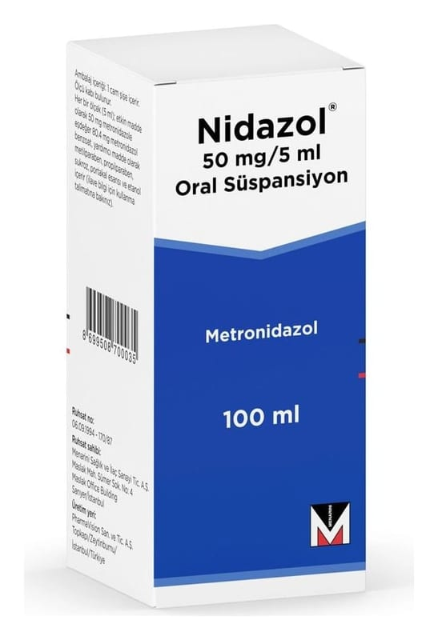

Nidazol 50 mg/5 ml Oral Süspansiyon, 100 ml

Ne için kullanılır
KT · Bölüm 1NİDAZOL, metronidazol benzoat adı verilen bir etkin madde içerir. Bu ilaç, antibiyotikler adı verilen bir gruba dahildir.
Vücudunuzda enfeksiyona yol açan bakterileri ve parazitleri öldürür.
Bu ilacı kullanmaya başlamadan önce bu KULLANMA TALİMATINI dikkatlice okuyunuz, çünkü sizin için önemli bilgiler içermektedir. Bu kullanma talimatını saklayınız. Daha sonra tekrar okumaya ihtiyaç duyabilirsiniz. Eğer ilave sorularınız olursa, lütfen doktorunuza veya eczacınıza danışınız. Bu ilaç kişisel olarak sizin için reçete edilmiştir, başkalarına vermeyiniz. Bu ilacın kullanımı sırasında, doktora veya hastaneye gittiğinizde doktorunuza bu ilacı kullandığınızı söyleyiniz. Bu talimatta yazılanlara aynen uyunuz. İlaç hakkında size önerilen dozun dışında yüksek veya düşük doz kullanmayınız.
Bu ilaç aşağıdaki durumlarda kullanılır; ● Giardia lamblia (G. intestinalis)'nın (bir bakteri türü) neden olduğu giardiyaz (parazitin neden olduğu bir hastalık) tedavisinde, ● Postoperatif (ameliyat sonrası) anaerobic (oksijensiz solunum) bakteriyel enfeksiyonların önlenmesinde, ● Duyarlı anaerob (oksijensiz solunum) bakterilerin neden olduğu enfeksiyonları tedavisinde, ● Çocuklarda helicobacter pylori (midede enfeksiyona neden olan bir bakteri) enfeksiyonlarının tedavisinde.
NİDAZOL 100 ml’lik şişelerde, 5 ml’lik kaşık ile piyasaya sunulmaktadır. Süspansiyon, krem-beyaz renkli, homojen (tek bir madde gibi görünen), viskoz (az akışkan, ağda), portakal esansı kokuludur.